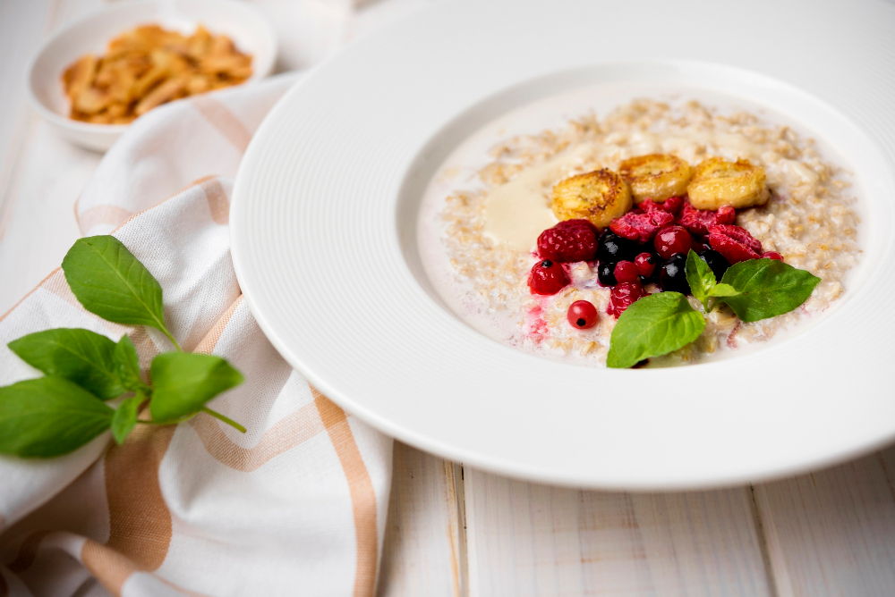

Oatmeal

Description
Traditional oatmeal to make any morning better
Ingredients
- Oat flakes
- Water
- Oat drink
- Toppings to your taste
Steps
- Heat water in a pan until it starts boiling. Then reduce to mild heat.
- Add oat flakes and stir
- Add oat drink and stir
- Let simmer slowly under a lid for a few minutes
- Add toppings according to your taste. Examples: Berries, banana slices, cottage cheese, peanut butter
Home